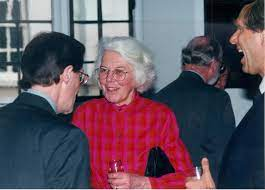
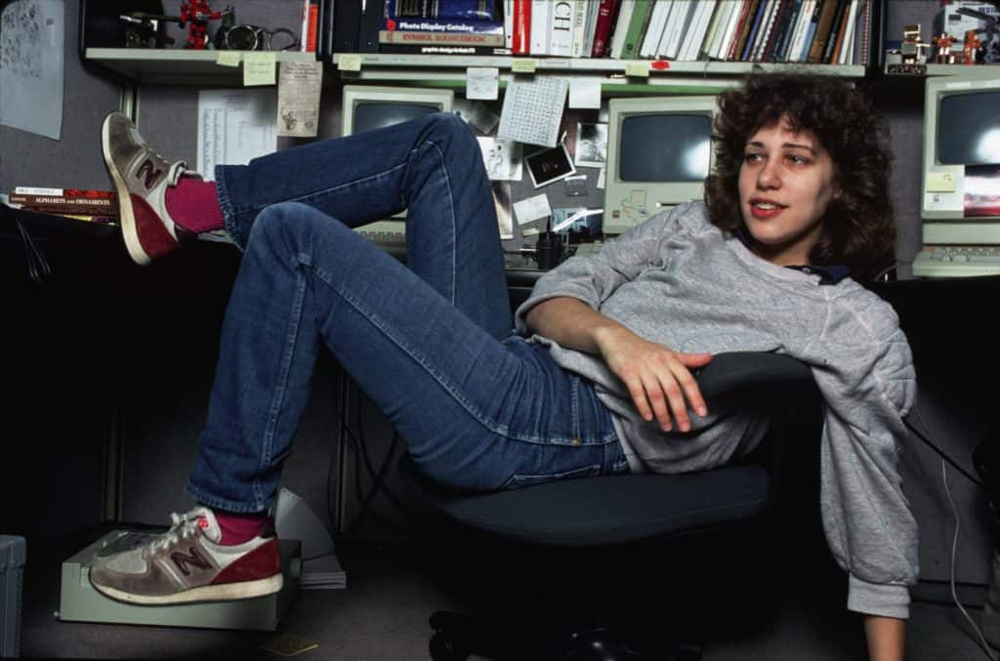

Feliz dia das Women!
Homenagem para a nossa Querida: Karen Sparck Jones
Do latim mulĭer, uma mulher é uma pessoa do sexo feminino. Trata-se de um termo que se utiliza em contraste a homem, conceito que nomeia o ser humano do sexo masculino. Significago um tanto quanto machista para po século de hoje, Keren, nossa homenageada e responsavel por criar um dos conceitos mais importantes da tecnologia deveria concordar.
Diva

Karen Spärck Jones FBA (26 de agosto de 1935 - 4 de abril de 2007) foi uma
cientista da computação britânica que foi responsável pela criação do conceito da
frequência inversa de documentos, uma tecnologia que sustenta os mecanismos de
buscas mais modernos.Em 2019, o The New York Times publicou seu obituário
tardio em sua série Overlooked, chamando ela de “a pioneira da ciência da computação
para trabalhos combinando estatísticas e linguísticas, e uma defensora das mulheres neste segmento”.
Carreira
Spärck Jones trabalhou no Cambridge Language Research Unit desde o final dos anos
50 depois br no Cambridge University
Computer Laboratory desde 1974, e aposentou-se em 2002, ocupando o cargo de Professora de Computadores e Informação,
no qual ela foi premiada em 1999.Antes de 1999, ela trabalhou em uma série de contratos de curto prazo. Ela continuou
a trabalhar no Laboratório de Computação até pouco antes de sua morte.
Suas principais áreas de pesquisa, desde o final dos anos 50, eram o processamento de linguagem natural e a recuperação de
informações. Uma de suas contribuições mais importantes foi o conceito de frequência inversa de documentos (IDF) na
recuperação de informações, escrito em um artigo de 1972 por ela. O IDF é usado na maioria dos mecanismos de pesquisa
atualmente, geralmente como parte do esquema de ponderação tf-idf.
Em 1982 ela se envolveu no Alvey Programme.


Há um palestra anual da British Computer Society em
sua homenagem. Em agosto de 2017, Universidade de
Huddersfield
renomeou um de seus edifícios do campus em
sua homenagem. Anteriormente conhecido como Canalside West,
o edifício Spärck
Jones abriga a Escola de Computação e Engenharia
da universidade.
Lembranças e referências
Criança, Adulta ou Idosa, nossa querida Keren Spärck sempre foi um destaque.


Prêmios
Gerard Salton Award (1988)
ASIS&T Prêmio ao Mérito (2002)
ACL Lifetime Achievement (2004)
BVida PessoalCS Lovelace Medal (2007)
Vida PessoalACM - AAAI Allen Newell Award (2006)
Vida PessoalACM Women's Group Athena Award (2007)
💌 Homenagem 💋
Reconheça a sua força: mulher é poderosa
sempre, até mesmo quando acha que não é! ㅤ
Corajosa, poderosa e destemida, uma mulher é
capaz de surpreender em todas as
circunstâncias e em qualquer medida.
Carreira
Spärck Jones trabalhou no Cambridge Language Research Unit desde o final dos anos
50 depois br no Cambridge University
Computer Laboratory desde 1974, e aposentou-se em 2002, ocupando o cargo de Professora de Computadores e Informação,
no qual ela foi premiada em 1999.Antes de 1999, ela trabalhou em uma série de contratos de curto prazo. Ela continuou
a trabalhar no Laboratório de Computação até pouco antes de sua morte.
Suas principais áreas de pesquisa, desde o final dos anos 50, eram o processamento de linguagem natural e a recuperação de
informações. Uma de suas contribuições mais importantes foi o conceito de frequência inversa de documentos (IDF) na
recuperação de informações, escrito em um artigo de 1972 por ela. O IDF é usado na maioria dos mecanismos de pesquisa
atualmente, geralmente como parte do esquema de ponderação tf-idf.
Em 1982 ela se envolveu no Alvey Programme.
Há um palestra anual da British Computer Society em
sua homenagem. Em agosto de 2017, Universidade de
Huddersfield
renomeou um de seus edifícios do campus em
sua homenagem. Anteriormente conhecido como Canalside West,
o edifício Spärck
Jones abriga a Escola de Computação e Engenharia
da universidade.